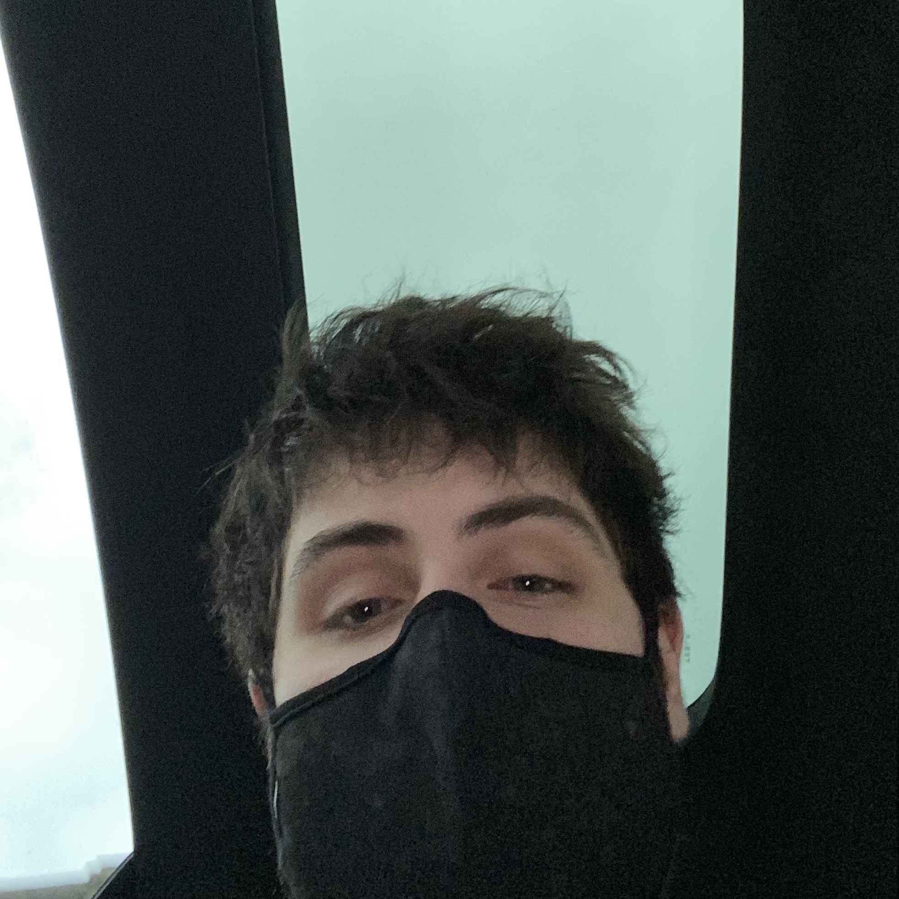

For a programming part of this assignment, I used a photo of my face to experiment with image augmentation in python.
I made a copy of the original image, and iterated through it's rows and columns and altered the copy image's color channel by setting it to an average of the RGB channels
Then I took the altered greyscale image and iterated through it's color channel and subtracted each value from 255 in order to invert the greyscale colors.